Każda nowa rozmowa z AI zaczyna się od zera. Jak ładowanie kasety na C64 — bez pamięci operacyjnej, bez kontekstu, bez historii.
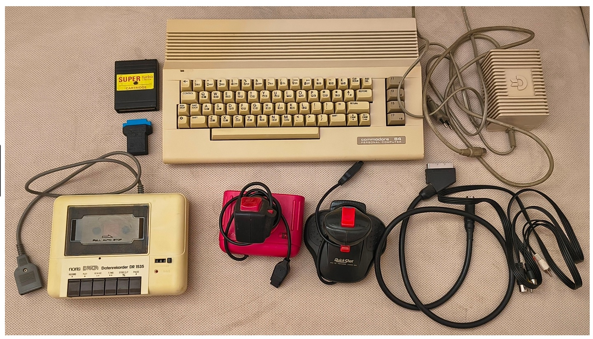
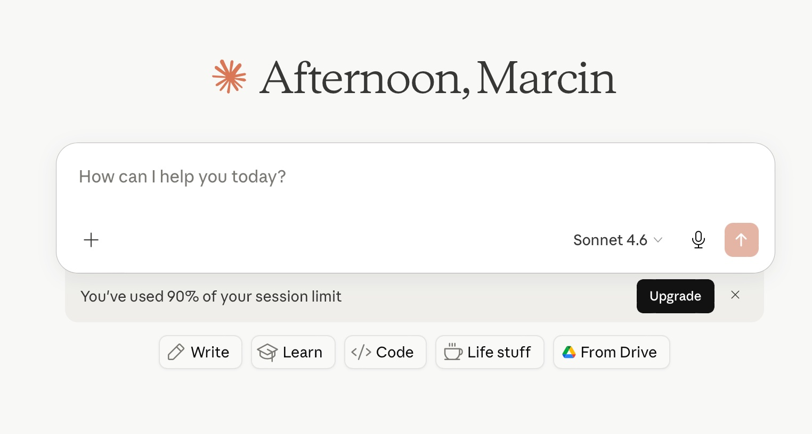
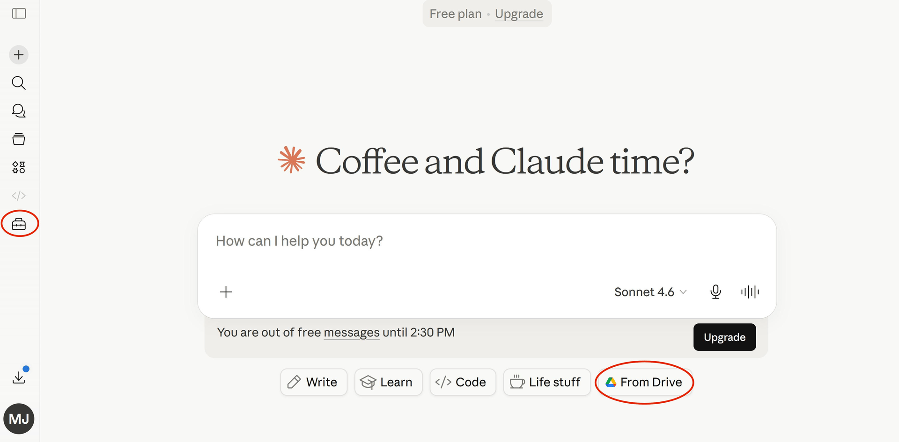
Nie przywiązuj się do jednego narzędzia. C64 zastąpił PC. PC zastępuje AI.
Liczy się ciągłość myślenia — nie wierność konkretnej maszynie.
Rynek AI fragmentuje się. Każdy model jest najlepszy w czymś innym. Wybór narzędzia ma znaczenie — jak dobór specjalisty do zadania.
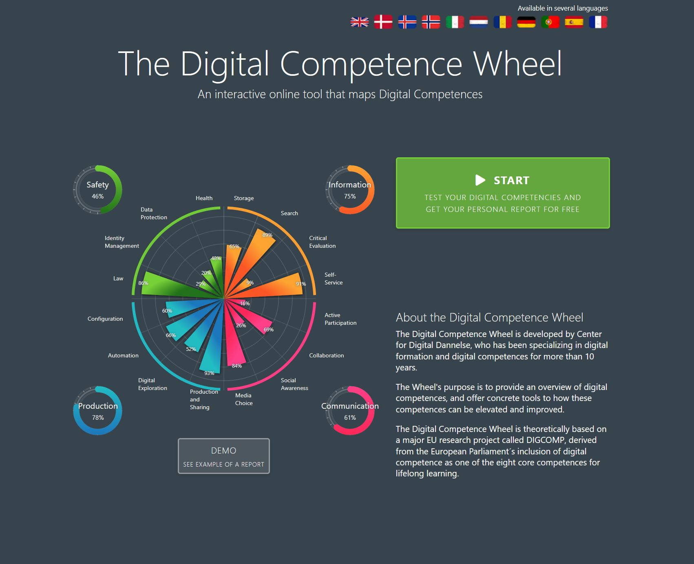
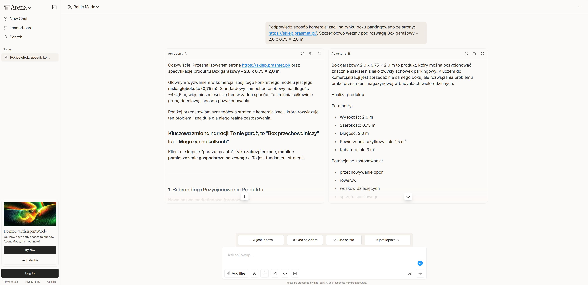
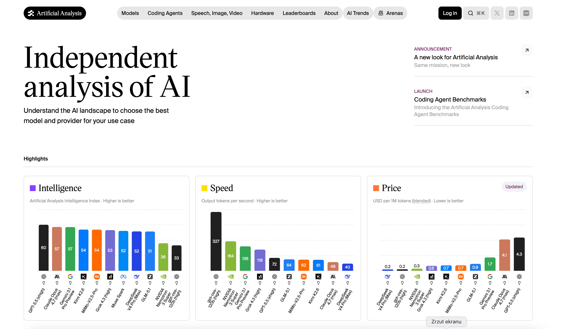
Nie pytaj "który AI jest najlepszy". Pytaj: "najlepszy do czego?"
To jest fundament budowania własnej orkiestry narzędzi.
🎯 Digital Competence Wheel
Oceń kompetencje cyfrowe swojego klienta zanim zaproponujesz narzędzie AI
Jeden AI do wszystkiego to jak jeden pracownik do całej firmy. Każde narzędzie robi najlepiej to, do czego zostało zaprojektowane.
Porównuj modele zanim wybierzesz do zadania
W prompcie są wbudowane guidelines najlepszych profili EEN. AI nie zgaduje — porównuje do wzorca i wskazuje co poprawić.
| Priorytet | Firma | Lokalizacja | Komentarz AI |
|---|---|---|---|
| 1 | Pako-Box Sp. z o.o. | Wrocław | Specjalista od sztywnych pudełek premium, doświadczenie z markami luksusowymi |
| 2 | Opakowania Premium S.A. | Opole | Duży producent z działem montażu manualnego |
| 3 | Kartonex Dolny Śląsk | Legnica | Nowoczesna linia do produkcji i montażu pudełek sztywnych |
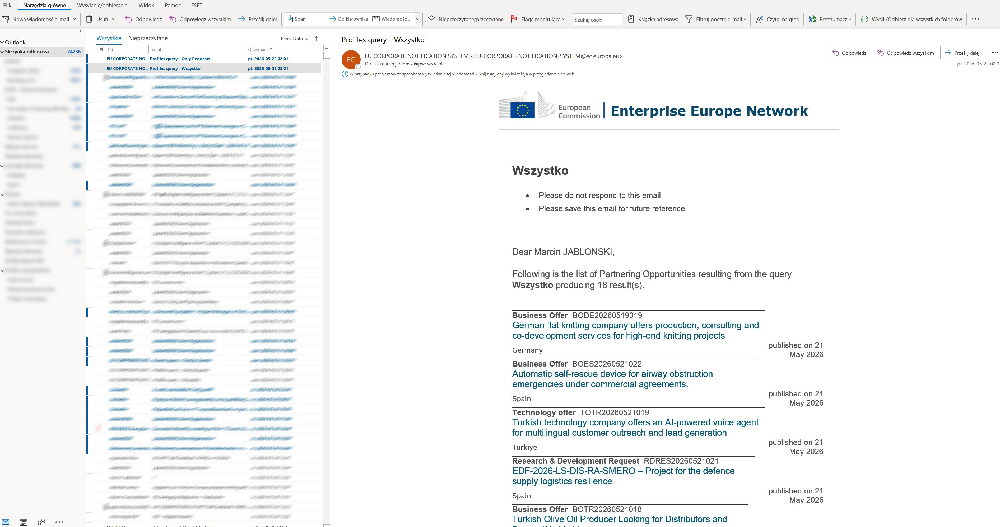
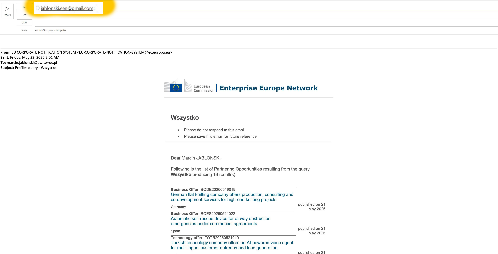
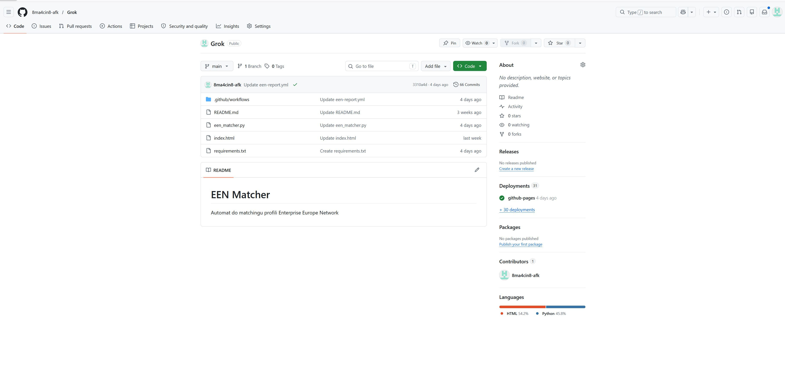
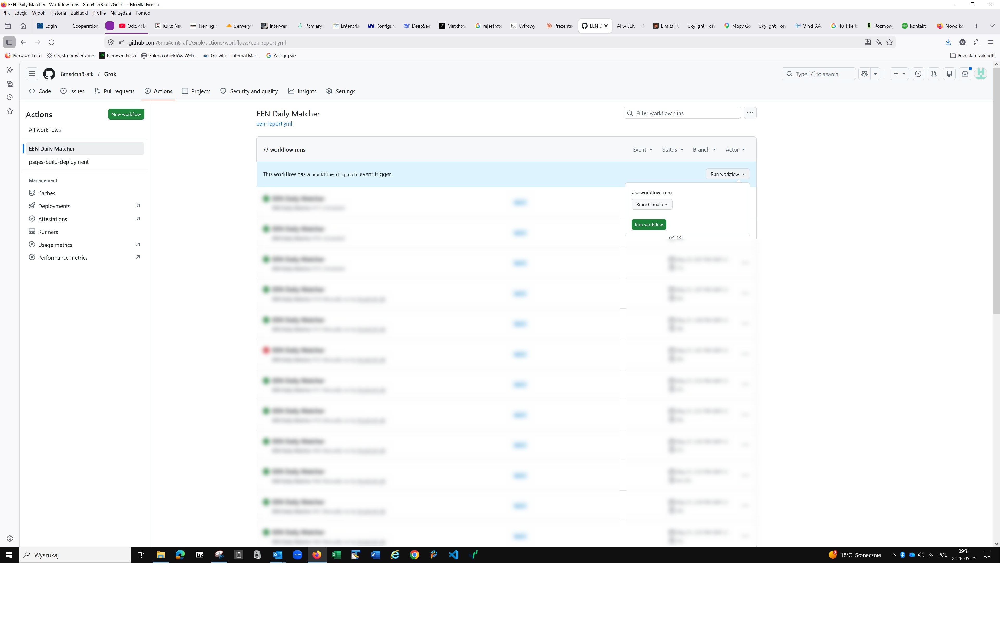
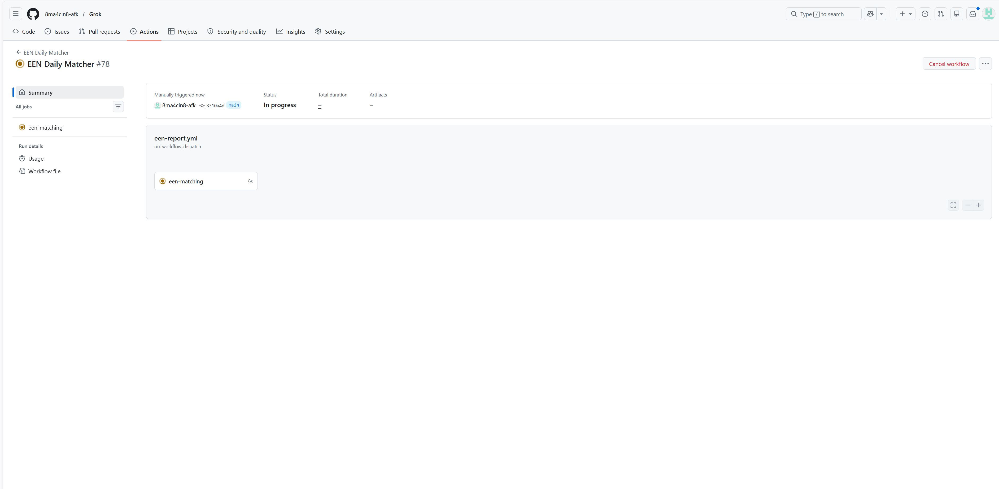
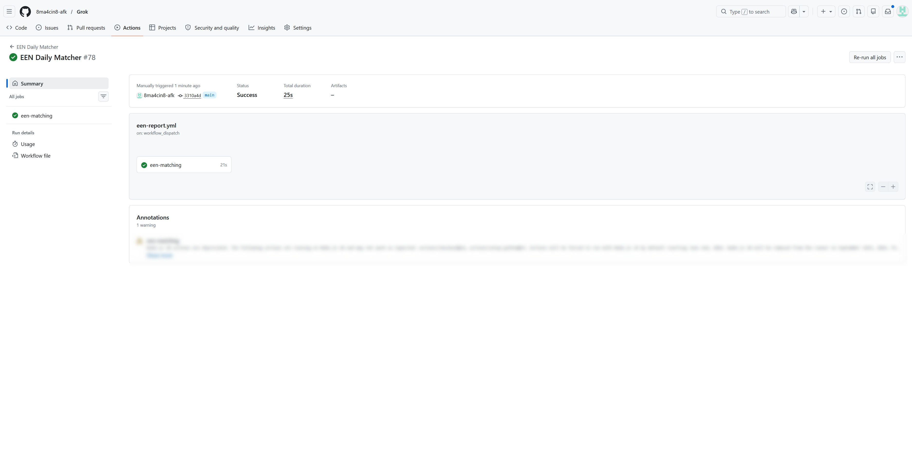
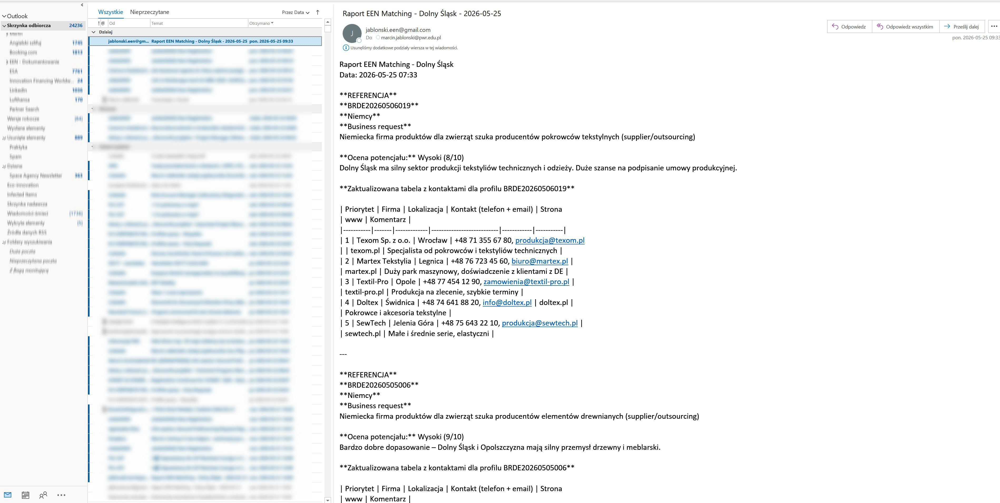
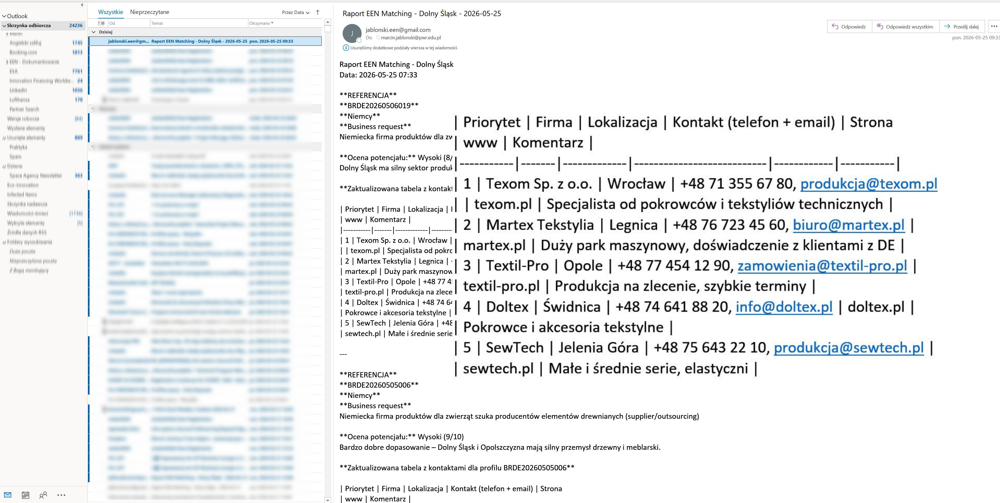
Ile jest warta usługa zaawansowana, która zmienia wynik klienta na evencie?
To jest pytanie o jakość — nie o liczbę ptaszków w tabeli.
Automatyczne raporty branżowe generowane przez GitHub Actions każdego czwartku o 8:00. Klient nie dostaje newslettera — dostaje wywiad gospodarczy skrojony pod jego firmę.
"To nie jest newsletter. To jest wywiad gospodarczy skrojony pod pana firmę."
— propozycja wartości dla klientów EEN korzystających z raportów AIPA podpisane 7 lat temu. Każdy rok — większe zamówienia. W końcu nowa linia produkcyjna pod kontrakt z partnerem z Niemiec pozyskanym przez EEN.
Projekt EIMC — zarządzanie innowacjami. Wspólna beczka soli.
4 agenty AI równolegle. Harmonogramy maszyn CNC pod kontrolą AI.
7 sztuk złych na 200 000 — cel: zero.
Spotkanie 22.05 — 7 godzin, rozstaliśmy się z niedosytem.
Ta sama relacja — zupełnie inny świat. Czy jesteśmy gotowi rozmawiać z takim klientem jak równy z równym?
Bartłomiej Bieniasz, CEO Prasmet — klient EEN od 7 lat — wdrożył AI we wszystkich procesach zarządzania firmą. Podczas ostatniej wizyty rozmawialiśmy przez całą zmianę dokonując istotnych zmian w strukturze generowanych raportów z produkcji.
Za 2-3 lata każdy ambitny klient MŚP będzie miał AI w produkcji, sprzedaży, logistyce, finansach. Przyjdzie do nas po pomoc w internacjonalizacji — i zapyta czego nie potrafi zapytać chatbota.
Jeśli nie rozumiemy AI kompleksowo — nie będziemy partnerami. Będziemy tylko wypełniaczami formularzy.
Dlatego proponuję: krajowa grupa robocza AI w polskim EEN.
Nie żeby śledzić trendy — żeby przeżyć jako instytucja i budować razem narzędzia które każdy z nas potrzebuje.
Wchodzimy w erę w której humanoidalne roboty przejmą rolę głównego eksperta. Człowiek zostanie zdegradowany do roli asystenta dbającego o komfort robota.
A konsultant EEN? Dziś matchujesz ręcznie. Jutro robot zmatchuje lepiej, szybciej, taniej — i napisze mail sam.
Pytanie nie brzmi: czy to nastąpi. Brzmi: po której stronie będziesz stać.
Jedyna odpowiedź: rozumieć AI kompleksowo. Być orkiestrantem — nie instrumentem.